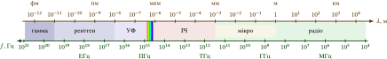
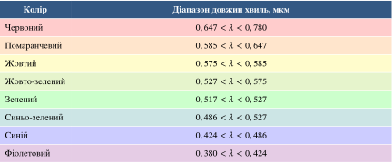
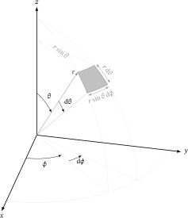

Оптика. Практичний курс
\(\newcommand{\footnotename}{footnote}\)
\(\def \LWRfootnote {1}\)
\(\newcommand {\footnote }[2][\LWRfootnote ]{{}^{\mathrm {#1}}}\)
\(\newcommand {\footnotemark }[1][\LWRfootnote ]{{}^{\mathrm {#1}}}\)
\(\let \LWRorighspace \hspace \)
\(\renewcommand {\hspace }{\ifstar \LWRorighspace \LWRorighspace }\)
\(\newcommand {\TextOrMath }[2]{#2}\)
\(\newcommand {\mathnormal }[1]{{#1}}\)
\(\newcommand \ensuremath [1]{#1}\)
\(\newcommand {\LWRframebox }[2][]{\fbox {#2}} \newcommand {\framebox }[1][]{\LWRframebox } \)
\(\newcommand {\setlength }[2]{}\)
\(\newcommand {\addtolength }[2]{}\)
\(\newcommand {\setcounter }[2]{}\)
\(\newcommand {\addtocounter }[2]{}\)
\(\newcommand {\arabic }[1]{}\)
\(\newcommand {\number }[1]{}\)
\(\newcommand {\noalign }[1]{\text {#1}\notag \\}\)
\(\newcommand {\cline }[1]{}\)
\(\newcommand {\directlua }[1]{\text {(directlua)}}\)
\(\newcommand {\luatexdirectlua }[1]{\text {(directlua)}}\)
\(\newcommand {\protect }{}\)
\(\def \LWRabsorbnumber #1 {}\)
\(\def \LWRabsorbquotenumber "#1 {}\)
\(\newcommand {\LWRabsorboption }[1][]{}\)
\(\newcommand {\LWRabsorbtwooptions }[1][]{\LWRabsorboption }\)
\(\def \mathchar {\ifnextchar "\LWRabsorbquotenumber \LWRabsorbnumber }\)
\(\def \mathcode #1={\mathchar }\)
\(\let \delcode \mathcode \)
\(\let \delimiter \mathchar \)
\(\def \oe {\unicode {x0153}}\)
\(\def \OE {\unicode {x0152}}\)
\(\def \ae {\unicode {x00E6}}\)
\(\def \AE {\unicode {x00C6}}\)
\(\def \aa {\unicode {x00E5}}\)
\(\def \AA {\unicode {x00C5}}\)
\(\def \o {\unicode {x00F8}}\)
\(\def \O {\unicode {x00D8}}\)
\(\def \l {\unicode {x0142}}\)
\(\def \L {\unicode {x0141}}\)
\(\def \ss {\unicode {x00DF}}\)
\(\def \SS {\unicode {x1E9E}}\)
\(\def \dag {\unicode {x2020}}\)
\(\def \ddag {\unicode {x2021}}\)
\(\def \P {\unicode {x00B6}}\)
\(\def \copyright {\unicode {x00A9}}\)
\(\def \pounds {\unicode {x00A3}}\)
\(\let \LWRref \ref \)
\(\renewcommand {\ref }{\ifstar \LWRref \LWRref }\)
\( \newcommand {\multicolumn }[3]{#3}\)
\(\require {textcomp}\)
\(\require {colortbl}\)
\(\let \LWRorigcolumncolor \columncolor \)
\(\renewcommand {\columncolor }[2][named]{\LWRorigcolumncolor [#1]{#2}\LWRabsorbtwooptions }\)
\(\let \LWRorigrowcolor \rowcolor \)
\(\renewcommand {\rowcolor }[2][named]{\LWRorigrowcolor [#1]{#2}\LWRabsorbtwooptions }\)
\(\let \LWRorigcellcolor \cellcolor \)
\(\renewcommand {\cellcolor }[2][named]{\LWRorigcellcolor [#1]{#2}\LWRabsorbtwooptions }\)
\(\newcommand {\intertext }[1]{\text {#1}\notag \\}\)
\(\let \Hat \hat \)
\(\let \Check \check \)
\(\let \Tilde \tilde \)
\(\let \Acute \acute \)
\(\let \Grave \grave \)
\(\let \Dot \dot \)
\(\let \Ddot \ddot \)
\(\let \Breve \breve \)
\(\let \Bar \bar \)
\(\let \Vec \vec \)
\(\let \symnormal \mathit \)
\(\let \symliteral \mathrm \)
\(\let \symbb \mathbb \)
\(\let \symbbit \mathbb \)
\(\let \symcal \mathcal \)
\(\let \symscr \mathscr \)
\(\let \symfrak \mathfrak \)
\(\let \symsfup \mathsf \)
\(\let \symsfit \mathit \)
\(\let \symbfsf \mathbf \)
\(\let \symbfup \mathbf \)
\(\newcommand {\symbfit }[1]{\boldsymbol {#1}}\)
\(\let \symbfcal \mathcal \)
\(\let \symbfscr \mathscr \)
\(\let \symbffrak \mathfrak \)
\(\let \symbfsfup \mathbf \)
\(\newcommand {\symbfsfit }[1]{\boldsymbol {#1}}\)
\(\let \symup \mathrm \)
\(\let \symbf \mathbf \)
\(\let \symit \mathit \)
\(\let \symtt \mathtt \)
\(\let \symbffrac \mathbffrac \)
\(\newcommand {\mathfence }[1]{\mathord {#1}}\)
\(\newcommand {\mathover }[1]{#1}\)
\(\newcommand {\mathunder }[1]{#1}\)
\(\newcommand {\mathaccent }[1]{#1}\)
\(\newcommand {\mathbotaccent }[1]{#1}\)
\(\newcommand {\mathalpha }[1]{\mathord {#1}}\)
\(\def\upAlpha{\unicode{x0391}}\)
\(\def\upBeta{\unicode{x0392}}\)
\(\def\upGamma{\unicode{x0393}}\)
\(\def\upDigamma{\unicode{x03DC}}\)
\(\def\upDelta{\unicode{x0394}}\)
\(\def\upEpsilon{\unicode{x0395}}\)
\(\def\upZeta{\unicode{x0396}}\)
\(\def\upEta{\unicode{x0397}}\)
\(\def\upTheta{\unicode{x0398}}\)
\(\def\upVartheta{\unicode{x03F4}}\)
\(\def\upIota{\unicode{x0399}}\)
\(\def\upKappa{\unicode{x039A}}\)
\(\def\upLambda{\unicode{x039B}}\)
\(\def\upMu{\unicode{x039C}}\)
\(\def\upNu{\unicode{x039D}}\)
\(\def\upXi{\unicode{x039E}}\)
\(\def\upOmicron{\unicode{x039F}}\)
\(\def\upPi{\unicode{x03A0}}\)
\(\def\upVarpi{\unicode{x03D6}}\)
\(\def\upRho{\unicode{x03A1}}\)
\(\def\upSigma{\unicode{x03A3}}\)
\(\def\upTau{\unicode{x03A4}}\)
\(\def\upUpsilon{\unicode{x03A5}}\)
\(\def\upPhi{\unicode{x03A6}}\)
\(\def\upChi{\unicode{x03A7}}\)
\(\def\upPsi{\unicode{x03A8}}\)
\(\def\upOmega{\unicode{x03A9}}\)
\(\def\itAlpha{\unicode{x1D6E2}}\)
\(\def\itBeta{\unicode{x1D6E3}}\)
\(\def\itGamma{\unicode{x1D6E4}}\)
\(\def\itDigamma{\mathit{\unicode{x03DC}}}\)
\(\def\itDelta{\unicode{x1D6E5}}\)
\(\def\itEpsilon{\unicode{x1D6E6}}\)
\(\def\itZeta{\unicode{x1D6E7}}\)
\(\def\itEta{\unicode{x1D6E8}}\)
\(\def\itTheta{\unicode{x1D6E9}}\)
\(\def\itVartheta{\unicode{x1D6F3}}\)
\(\def\itIota{\unicode{x1D6EA}}\)
\(\def\itKappa{\unicode{x1D6EB}}\)
\(\def\itLambda{\unicode{x1D6EC}}\)
\(\def\itMu{\unicode{x1D6ED}}\)
\(\def\itNu{\unicode{x1D6EE}}\)
\(\def\itXi{\unicode{x1D6EF}}\)
\(\def\itOmicron{\unicode{x1D6F0}}\)
\(\def\itPi{\unicode{x1D6F1}}\)
\(\def\itRho{\unicode{x1D6F2}}\)
\(\def\itSigma{\unicode{x1D6F4}}\)
\(\def\itTau{\unicode{x1D6F5}}\)
\(\def\itUpsilon{\unicode{x1D6F6}}\)
\(\def\itPhi{\unicode{x1D6F7}}\)
\(\def\itChi{\unicode{x1D6F8}}\)
\(\def\itPsi{\unicode{x1D6F9}}\)
\(\def\itOmega{\unicode{x1D6FA}}\)
\(\def\upalpha{\unicode{x03B1}}\)
\(\def\upbeta{\unicode{x03B2}}\)
\(\def\upvarbeta{\unicode{x03D0}}\)
\(\def\upgamma{\unicode{x03B3}}\)
\(\def\updigamma{\unicode{x03DD}}\)
\(\def\updelta{\unicode{x03B4}}\)
\(\def\upepsilon{\unicode{x03F5}}\)
\(\def\upvarepsilon{\unicode{x03B5}}\)
\(\def\upzeta{\unicode{x03B6}}\)
\(\def\upeta{\unicode{x03B7}}\)
\(\def\uptheta{\unicode{x03B8}}\)
\(\def\upvartheta{\unicode{x03D1}}\)
\(\def\upiota{\unicode{x03B9}}\)
\(\def\upkappa{\unicode{x03BA}}\)
\(\def\upvarkappa{\unicode{x03F0}}\)
\(\def\uplambda{\unicode{x03BB}}\)
\(\def\upmu{\unicode{x03BC}}\)
\(\def\upnu{\unicode{x03BD}}\)
\(\def\upxi{\unicode{x03BE}}\)
\(\def\upomicron{\unicode{x03BF}}\)
\(\def\uppi{\unicode{x03C0}}\)
\(\def\upvarpi{\unicode{x03D6}}\)
\(\def\uprho{\unicode{x03C1}}\)
\(\def\upvarrho{\unicode{x03F1}}\)
\(\def\upsigma{\unicode{x03C3}}\)
\(\def\upvarsigma{\unicode{x03C2}}\)
\(\def\uptau{\unicode{x03C4}}\)
\(\def\upupsilon{\unicode{x03C5}}\)
\(\def\upphi{\unicode{x03D5}}\)
\(\def\upvarphi{\unicode{x03C6}}\)
\(\def\upchi{\unicode{x03C7}}\)
\(\def\uppsi{\unicode{x03C8}}\)
\(\def\upomega{\unicode{x03C9}}\)
\(\def\italpha{\unicode{x1D6FC}}\)
\(\def\itbeta{\unicode{x1D6FD}}\)
\(\def\itvarbeta{\unicode{x03D0}}\)
\(\def\itgamma{\unicode{x1D6FE}}\)
\(\def\itdigamma{\mathit{\unicode{x03DD}}}\)
\(\def\itdelta{\unicode{x1D6FF}}\)
\(\def\itepsilon{\unicode{x1D716}}\)
\(\def\itvarepsilon{\unicode{x1D700}}\)
\(\def\itzeta{\unicode{x1D701}}\)
\(\def\iteta{\unicode{x1D702}}\)
\(\def\ittheta{\unicode{x1D703}}\)
\(\def\itvartheta{\unicode{x1D717}}\)
\(\def\itiota{\unicode{x1D704}}\)
\(\def\itkappa{\unicode{x1D705}}\)
\(\def\itvarkappa{\unicode{x1D718}}\)
\(\def\itlambda{\unicode{x1D706}}\)
\(\def\itmu{\unicode{x1D707}}\)
\(\def\itnu{\unicode{x1D708}}\)
\(\def\itxi{\unicode{x1D709}}\)
\(\def\itomicron{\unicode{x1D70A}}\)
\(\def\itpi{\unicode{x1D70B}}\)
\(\def\itvarpi{\unicode{x1D71B}}\)
\(\def\itrho{\unicode{x1D70C}}\)
\(\def\itvarrho{\unicode{x1D71A}}\)
\(\def\itsigma{\unicode{x1D70E}}\)
\(\def\itvarsigma{\unicode{x1D70D}}\)
\(\def\ittau{\unicode{x1D70F}}\)
\(\def\itupsilon{\unicode{x1D710}}\)
\(\def\itphi{\unicode{x1D719}}\)
\(\def\itvarphi{\unicode{x1D711}}\)
\(\def\itchi{\unicode{x1D712}}\)
\(\def\itpsi{\unicode{x1D713}}\)
\(\def\itomega{\unicode{x1D714}}\)
\(\let \lparen (\)
\(\let \rparen )\)
\(\newcommand {\cuberoot }[1]{\,{}^3\!\!\sqrt {#1}}\,\)
\(\newcommand {\fourthroot }[1]{\,{}^4\!\!\sqrt {#1}}\,\)
\(\newcommand {\longdivision }[1]{\mathord {\unicode {x027CC}#1}}\)
\(\newcommand {\mathcomma }{,}\)
\(\newcommand {\mathcolon }{:}\)
\(\newcommand {\mathsemicolon }{;}\)
\(\newcommand {\overbracket }[1]{\mathinner {\overline {\ulcorner {#1}\urcorner }}}\)
\(\newcommand {\underbracket }[1]{\mathinner {\underline {\llcorner {#1}\lrcorner }}}\)
\(\newcommand {\overbar }[1]{\mathord {#1\unicode {x00305}}}\)
\(\newcommand {\ovhook }[1]{\mathord {#1\unicode {x00309}}}\)
\(\newcommand {\ocirc }[1]{\mathord {#1\unicode {x0030A}}}\)
\(\newcommand {\candra }[1]{\mathord {#1\unicode {x00310}}}\)
\(\newcommand {\oturnedcomma }[1]{\mathord {#1\unicode {x00312}}}\)
\(\newcommand {\ocommatopright }[1]{\mathord {#1\unicode {x00315}}}\)
\(\newcommand {\droang }[1]{\mathord {#1\unicode {x0031A}}}\)
\(\newcommand {\leftharpoonaccent }[1]{\mathord {#1\unicode {x020D0}}}\)
\(\newcommand {\rightharpoonaccent }[1]{\mathord {#1\unicode {x020D1}}}\)
\(\newcommand {\vertoverlay }[1]{\mathord {#1\unicode {x020D2}}}\)
\(\newcommand {\leftarrowaccent }[1]{\mathord {#1\unicode {x020D0}}}\)
\(\newcommand {\annuity }[1]{\mathord {#1\unicode {x020E7}}}\)
\(\newcommand {\widebridgeabove }[1]{\mathord {#1\unicode {x020E9}}}\)
\(\newcommand {\asteraccent }[1]{\mathord {#1\unicode {x020F0}}}\)
\(\newcommand {\threeunderdot }[1]{\mathord {#1\unicode {x020E8}}}\)
\(\newcommand {\Bbbsum }{\mathop {\unicode {x2140}}\limits }\)
\(\newcommand {\oiint }{\mathop {\unicode {x222F}}\limits }\)
\(\newcommand {\oiiint }{\mathop {\unicode {x2230}}\limits }\)
\(\newcommand {\intclockwise }{\mathop {\unicode {x2231}}\limits }\)
\(\newcommand {\ointclockwise }{\mathop {\unicode {x2232}}\limits }\)
\(\newcommand {\ointctrclockwise }{\mathop {\unicode {x2233}}\limits }\)
\(\newcommand {\varointclockwise }{\mathop {\unicode {x2232}}\limits }\)
\(\newcommand {\leftouterjoin }{\mathop {\unicode {x27D5}}\limits }\)
\(\newcommand {\rightouterjoin }{\mathop {\unicode {x27D6}}\limits }\)
\(\newcommand {\fullouterjoin }{\mathop {\unicode {x27D7}}\limits }\)
\(\newcommand {\bigbot }{\mathop {\unicode {x27D8}}\limits }\)
\(\newcommand {\bigtop }{\mathop {\unicode {x27D9}}\limits }\)
\(\newcommand {\xsol }{\mathop {\unicode {x29F8}}\limits }\)
\(\newcommand {\xbsol }{\mathop {\unicode {x29F9}}\limits }\)
\(\newcommand {\bigcupdot }{\mathop {\unicode {x2A03}}\limits }\)
\(\newcommand {\bigsqcap }{\mathop {\unicode {x2A05}}\limits }\)
\(\newcommand {\conjquant }{\mathop {\unicode {x2A07}}\limits }\)
\(\newcommand {\disjquant }{\mathop {\unicode {x2A08}}\limits }\)
\(\newcommand {\bigtimes }{\mathop {\unicode {x2A09}}\limits }\)
\(\newcommand {\modtwosum }{\mathop {\unicode {x2A0A}}\limits }\)
\(\newcommand {\sumint }{\mathop {\unicode {x2A0B}}\limits }\)
\(\newcommand {\intbar }{\mathop {\unicode {x2A0D}}\limits }\)
\(\newcommand {\intBar }{\mathop {\unicode {x2A0E}}\limits }\)
\(\newcommand {\fint }{\mathop {\unicode {x2A0F}}\limits }\)
\(\newcommand {\cirfnint }{\mathop {\unicode {x2A10}}\limits }\)
\(\newcommand {\awint }{\mathop {\unicode {x2A11}}\limits }\)
\(\newcommand {\rppolint }{\mathop {\unicode {x2A12}}\limits }\)
\(\newcommand {\scpolint }{\mathop {\unicode {x2A13}}\limits }\)
\(\newcommand {\npolint }{\mathop {\unicode {x2A14}}\limits }\)
\(\newcommand {\pointint }{\mathop {\unicode {x2A15}}\limits }\)
\(\newcommand {\sqint }{\mathop {\unicode {x2A16}}\limits }\)
\(\newcommand {\intlarhk }{\mathop {\unicode {x2A17}}\limits }\)
\(\newcommand {\intx }{\mathop {\unicode {x2A18}}\limits }\)
\(\newcommand {\intcap }{\mathop {\unicode {x2A19}}\limits }\)
\(\newcommand {\intcup }{\mathop {\unicode {x2A1A}}\limits }\)
\(\newcommand {\upint }{\mathop {\unicode {x2A1B}}\limits }\)
\(\newcommand {\lowint }{\mathop {\unicode {x2A1C}}\limits }\)
\(\newcommand {\bigtriangleleft }{\mathop {\unicode {x2A1E}}\limits }\)
\(\newcommand {\zcmp }{\mathop {\unicode {x2A1F}}\limits }\)
\(\newcommand {\zpipe }{\mathop {\unicode {x2A20}}\limits }\)
\(\newcommand {\zproject }{\mathop {\unicode {x2A21}}\limits }\)
\(\newcommand {\biginterleave }{\mathop {\unicode {x2AFC}}\limits }\)
\(\newcommand {\bigtalloblong }{\mathop {\unicode {x2AFF}}\limits }\)
\(\newcommand {\arabicmaj }{\mathop {\unicode {x1EEF0}}\limits }\)
\(\newcommand {\arabichad }{\mathop {\unicode {x1EEF1}}\limits }\)
\(\newcommand {\nicefrac }[3][]{\mathinner {{}^{#2}\!/\!_{#3}}}\)
\(\require {mhchem}\)
\(\newcommand {\toprule }[1][]{\hline }\)
\(\let \midrule \toprule \)
\(\let \bottomrule \toprule \)
\(\def \LWRbooktabscmidruleparen (#1)#2{}\)
\(\newcommand {\LWRbooktabscmidrulenoparen }[1]{}\)
\(\newcommand {\cmidrule }[1][]{\ifnextchar (\LWRbooktabscmidruleparen \LWRbooktabscmidrulenoparen }\)
\(\newcommand {\morecmidrules }{}\)
\(\newcommand {\specialrule }[3]{\hline }\)
\(\newcommand {\addlinespace }[1][]{}\)
\(\newcommand {\LWRsubmultirow }[2][]{#2}\)
\(\newcommand {\LWRmultirow }[2][]{\LWRsubmultirow }\)
\(\newcommand {\multirow }[2][]{\LWRmultirow }\)
\(\newcommand {\mrowcell }{}\)
\(\newcommand {\mcolrowcell }{}\)
\(\newcommand {\STneed }[1]{}\)
\(\require {physics}\)
\(\newcommand {\LWRphystrig }[2]{\ifblank {#1}{\textrm {#2}}{\textrm {#2}^{#1}}}\)
\(\renewcommand {\sin }[1][]{\LWRphystrig {#1}{sin}}\)
\(\renewcommand {\sinh }[1][]{\LWRphystrig {#1}{sinh}}\)
\(\renewcommand {\arcsin }[1][]{\LWRphystrig {#1}{arcsin}}\)
\(\renewcommand {\asin }[1][]{\LWRphystrig {#1}{asin}}\)
\(\renewcommand {\cos }[1][]{\LWRphystrig {#1}{cos}}\)
\(\renewcommand {\cosh }[1][]{\LWRphystrig {#1}{cosh}}\)
\(\renewcommand {\arccos }[1][]{\LWRphystrig {#1}{arcos}}\)
\(\renewcommand {\acos }[1][]{\LWRphystrig {#1}{acos}}\)
\(\renewcommand {\tan }[1][]{\LWRphystrig {#1}{tan}}\)
\(\renewcommand {\tanh }[1][]{\LWRphystrig {#1}{tanh}}\)
\(\renewcommand {\arctan }[1][]{\LWRphystrig {#1}{arctan}}\)
\(\renewcommand {\atan }[1][]{\LWRphystrig {#1}{atan}}\)
\(\renewcommand {\csc }[1][]{\LWRphystrig {#1}{csc}}\)
\(\renewcommand {\csch }[1][]{\LWRphystrig {#1}{csch}}\)
\(\renewcommand {\arccsc }[1][]{\LWRphystrig {#1}{arccsc}}\)
\(\renewcommand {\acsc }[1][]{\LWRphystrig {#1}{acsc}}\)
\(\renewcommand {\sec }[1][]{\LWRphystrig {#1}{sec}}\)
\(\renewcommand {\sech }[1][]{\LWRphystrig {#1}{sech}}\)
\(\renewcommand {\arcsec }[1][]{\LWRphystrig {#1}{arcsec}}\)
\(\renewcommand {\asec }[1][]{\LWRphystrig {#1}{asec}}\)
\(\renewcommand {\cot }[1][]{\LWRphystrig {#1}{cot}}\)
\(\renewcommand {\coth }[1][]{\LWRphystrig {#1}{coth}}\)
\(\renewcommand {\arccot }[1][]{\LWRphystrig {#1}{arccot}}\)
\(\renewcommand {\acot }[1][]{\LWRphystrig {#1}{acot}}\)
\(\newcommand {\vect }[1]{\boldsymbol {#1}}\)
\(\DeclareMathOperator {\const }{const}\)
\(\DeclareMathOperator {\inv }{inv}\)
\(\newcommand {\Laplasian }{\Delta }\)
\(\newcommand {\nfrac }[2]{{}^{#1}\!/{}_{#2}}\)
\(\newcommand {\emf }{ℰ}\)
\(\newcommand {\tikzmarknode }[2]{#2}\)
\(\newcommand {\tikzmark }[1]{}\)
\(\newcommand {\enquote }[1]{«#1»}\)
\(\newcommand {\allowbreak }{}\)
\(\newcommand {\mitlambda }{\lambda }\)
\(\newcommand {\mitomega }{\omega }\)
\(\newcommand {\mittheta }{\theta }\)
\(\newcommand {\mitphi }{\varphi }\)
\(\newcommand {\tcbhighmath }[1]{\boxed {#1}}\)
\(\DeclareMathOperator {\sh }{sh}\)
\(\DeclareMathOperator {\ch }{ch}\)
\(\DeclareMathOperator {\tg }{tg}\)
\(\DeclareMathOperator {\ctg }{ctg}\)
\(\DeclareMathOperator {\arctg }{arctg}\)
\(\DeclareMathOperator {\arcctg }{arcctg}\)
\(\DeclareMathOperator {\cth }{cth}\)
\(\DeclareMathOperator {\cosec }{cosec}\)
\(\let \symsf \symsfup \)
\(\def\Alpha{\unicode{x0391}}\)
\(\def\Beta{\unicode{x0392}}\)
\(\def\Gamma{\unicode{x0393}}\)
\(\def\Digamma{\unicode{x03DC}}\)
\(\def\Delta{\unicode{x0394}}\)
\(\def\Epsilon{\unicode{x0395}}\)
\(\def\Zeta{\unicode{x0396}}\)
\(\def\Eta{\unicode{x0397}}\)
\(\def\Theta{\unicode{x0398}}\)
\(\def\Vartheta{\unicode{x03F4}}\)
\(\def\Iota{\unicode{x0399}}\)
\(\def\Kappa{\unicode{x039A}}\)
\(\def\Lambda{\unicode{x039B}}\)
\(\def\Mu{\unicode{x039C}}\)
\(\def\Nu{\unicode{x039D}}\)
\(\def\Xi{\unicode{x039E}}\)
\(\def\Omicron{\unicode{x039F}}\)
\(\def\Pi{\unicode{x03A0}}\)
\(\def\Varpi{\unicode{x03D6}}\)
\(\def\Rho{\unicode{x03A1}}\)
\(\def\Sigma{\unicode{x03A3}}\)
\(\def\Tau{\unicode{x03A4}}\)
\(\def\Upsilon{\unicode{x03A5}}\)
\(\def\Phi{\unicode{x03A6}}\)
\(\def\Chi{\unicode{x03A7}}\)
\(\def\Psi{\unicode{x03A8}}\)
\(\def\Omega{\unicode{x03A9}}\)
\(\def\alpha{\unicode{x1D6FC}}\)
\(\def\beta{\unicode{x1D6FD}}\)
\(\def\varbeta{\unicode{x03D0}}\)
\(\def\gamma{\unicode{x1D6FE}}\)
\(\def\digamma{\mathit{\unicode{x03DD}}}\)
\(\def\delta{\unicode{x1D6FF}}\)
\(\def\epsilon{\unicode{x1D716}}\)
\(\def\varepsilon{\unicode{x1D700}}\)
\(\def\zeta{\unicode{x1D701}}\)
\(\def\eta{\unicode{x1D702}}\)
\(\def\theta{\unicode{x1D703}}\)
\(\def\vartheta{\unicode{x1D717}}\)
\(\def\iota{\unicode{x1D704}}\)
\(\def\kappa{\unicode{x1D705}}\)
\(\def\varkappa{\unicode{x1D718}}\)
\(\def\lambda{\unicode{x1D706}}\)
\(\def\mu{\unicode{x1D707}}\)
\(\def\nu{\unicode{x1D708}}\)
\(\def\xi{\unicode{x1D709}}\)
\(\def\omicron{\unicode{x1D70A}}\)
\(\def\pi{\unicode{x1D70B}}\)
\(\def\varpi{\unicode{x1D71B}}\)
\(\def\rho{\unicode{x1D70C}}\)
\(\def\varrho{\unicode{x1D71A}}\)
\(\def\sigma{\unicode{x1D70E}}\)
\(\def\varsigma{\unicode{x1D70D}}\)
\(\def\tau{\unicode{x1D70F}}\)
\(\def\upsilon{\unicode{x1D710}}\)
\(\def\phi{\unicode{x1D719}}\)
\(\def\varphi{\unicode{x1D711}}\)
\(\def\chi{\unicode{x1D712}}\)
\(\def\psi{\unicode{x1D713}}\)
\(\def\omega{\unicode{x1D714}}\)
Додатки
А Шкала електромагнітних хвиль

Таблиця А.1. Довжини хвиль кольорів, які сприймає око людини

Б Математичні формули та співвідношенняБ.1 Тілесний кут
Тілесний кут — це відношення площі сфери, що перетинається конусом до квадрату її радіусу.
Елемент тілесного кута визначається як:
\(\seteqnumber{0}{}{0}\)
\begin{equation}
\label {eq:solid_angle} d\Omega = \frac {dS}{r^2}
\end{equation}
де \(dS\) — елемент площі поверхні сфери радіуса \(r\) (рис. Б.1 ).

Рис. Б.1. Тілесний кут
Елемент тілесного кута в сферичній системі координат
\(\seteqnumber{0}{}{1}\)
\begin{equation}
\label {eq:solid_angle_in_spherical} d\Omega = \sin \theta d\theta d\phi
\end{equation}
В Фотометричні дані
Таблиця В.1. Сили світла деяких джерел
Таблиця В.2. Освітленості від деяких джерел
.
Джерело
Освітленість, лк
Світло Сіріуса, найяскравішої зірки нічного неба
\(10^{−5}\)
Поверхня Землі під прямими сонячними променями
\(32000 - 10000\)
Безмісячне зоряне небо зі світінням
\(0.002\)
Чверть Місяця
\(0.01\)
Повний місяць у ясну ніч
\(0.27 - 1.0\)
Повний місяць в тропіках
\(1\)
У морі на глибині \(\approx 50\) м
до \(20\)
Житлова кімната
\(50\)
Дуже темний похмурий день
\(100\)
Офісне освітлення
\(320 - 500\)
Таблиця В.3. Яскравість деяких випромінювачів
.
Джерело
Яскравість, кд/м\(^2\)
Сонце
\(1,5 - 10^{8}\)
Нічне небо за відсутності Місяця
\(10\)
Вольфрамова нитка лампи розжарювання
\((1,5- 2)\cdot 10^6\)
Поверхня Місяця
\(2.5 \cdot 10^3\)
Екран кінотеатру
\(5 - 20\)
Аркуш білого паперу за освітленості \(30 - 50 \) лк
\(10 - 15\)
сніг під прямими сонячними променями
\(3 \cdot 10^4 \)
Г Фізичні константи
Таблиця Г.1. Деякі фізичні константи в системі СГС
.
Константа
Символ
Значення
Швидкість світла у вакуумі
\(c\)
\(2.997 924 58 \cdot 10^{10}\) см/с
Гравітаційна стала
\(G\)
\(6.674 28 \cdot 10^{-8}\) см\(^3\)/(г\(\cdot \)c\(^2\))
Стала Планка
\(\hbar \)
\(1.054 5716 \cdot 10^{-27}\) ерг\(\cdot \)с
Елементарний заряд
\(e\)
\(4.803 204 27 \cdot 10^{-10}\) СГСЕ\(_q \)1
\(1.60217662 \cdot 10^{-19}\) Кл (в SI)
Маса електрона
\(m_e\)
\(9.109 382 15 \cdot 10^{-20}\) г
Енергія спокою електрона
\(m_ec^2\)
\(0.511 \cdot 10^{6}\) еВ
Маса протона
\(m_p\)
\(1.672 621 9 \cdot 10^{-30}\) г
Енергія спокою протона
\(m_pc^2\)
\(938.26 \cdot 10^{6}\) еВ
Електрон-Вольт
еВ
\(1.602\cdot 10^{-12}\) ерг
Борівський радіус
\(a_0\)
\(5.291 772 0859 \cdot 10^{-9}\) см
Магнетон Бора
\(\mu _B\)
\(9.274 009 15 \cdot 10^{-21}\) ерг/Гс
Стала Больцмана
\(k\)
\(1.380 6504 \cdot 10^{-16}\) ерг/К
Універсальна газова стала
\(R\)
\(8.314\cdot 10^{7}\) ерг/(К\(\cdot \)моль)
Число Авогадро
\(N_A\)
\(6.022\cdot 10^{23}\) моль\(^{-1}\)
Атомна одиниця маси
\(u\)
\(1.66042 10^{-24}\) г